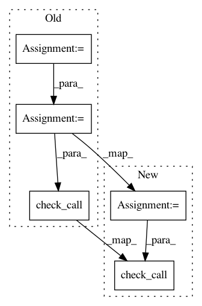

7062e5d8601dfc651f670c5427194a3f68a5dd2c,solutionbox/code_free_ml/test_mltoolbox/test_transform_raw_data.py,TestTransformRawData,test_local_csv_transform,#TestTransformRawData#,108
Before Change
Test transfrom from local csv files.
try:
self._create_test_data()
tfex_dir = os.path.join(self.output_folder, "test_results")
cmd = ["python " + os.path.join(CODE_PATH, "transform_raw_data.py"),
"--csv-file-pattern=" + self.csv_input_filepath,
"--analyze-output-dir=" + self.output_folder,
"--output-filename-prefix=features",
"--output-dir=" + tfex_dir]
subprocess.check_call(" ".join(cmd), shell=True)
// Read the tf record file. There should only be one file.
record_filepath = os.path.join(tfex_dir,
"features-00000-of-00001.tfrecord.gz")
After Change
def test_local_csv_transform(self):
Test transfrom from local csv files.
cmd = ["python " + os.path.join(CODE_PATH, "transform_raw_data.py"),
"--csv-file-pattern=" + self.csv_input_filepath,
"--analyze-output-dir=" + self.analysis_dir,
"--output-filename-prefix=features",
"--output-dir=" + self.output_dir]
subprocess.check_call(" ".join(cmd), shell=True)
// Read the tf record file. There should only be one file.
record_filepath = os.path.join(self.output_dir,
"features-00000-of-00001.tfrecord.gz")
In pattern: SUPERPATTERN
Frequency: 4
Non-data size: 5
Instances
Project Name: googledatalab/pydatalab
Commit Name: 7062e5d8601dfc651f670c5427194a3f68a5dd2c
Time: 2017-05-17
Author: qimingj@users.noreply.github.com
File Name: solutionbox/code_free_ml/test_mltoolbox/test_transform_raw_data.py
Class Name: TestTransformRawData
Method Name: test_local_csv_transform
Project Name: geomstats/geomstats
Commit Name: 6c0d1328eec1c5fd82fb1160b94828ef4600f668
Time: 2020-05-22
Author: 62605255+pchauchat@users.noreply.github.com
File Name: tests/test_notebooks.py
Class Name:
Method Name: _exec_notebook
Project Name: broadinstitute/gtex-pipeline
Commit Name: 51894da4d9c4c4186c1b4ce34b2cf53737f0dab5
Time: 2016-09-22
Author: francois@broadinstitute.org
File Name: rnaseq/src/run_SamToFastq.py
Class Name:
Method Name:
Project Name: broadinstitute/gtex-pipeline
Commit Name: 6abef63d2e0f54ff98e402bb390d01cfb33625c1
Time: 2017-01-11
Author: francois@broadinstitute.org
File Name: rnaseq/src/run_RSEM.py
Class Name:
Method Name: